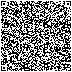

岡
山
大
学
電子計算機研究会
幹部を紹介します。
- 部長 終に鮭
-
このビラを書いた人。元競技プログラマ(アマチュア)。
ソフトウェア関連のことに手当たり次第に触れてきたために多言語系変態になった。
本人は新たな学びを至上の喜びと思っているらしく、プロダクト開発は二の次らしい。
部内ではWeb班として扱われがち。シェル芸を身に着けたい。
- 会計 ひじき
-
リアクション芸人(不本意だろうが)。日曜ゲーム開発者。幹部陣の良心。
彼のゲームはとても面白いのだが、スマホ版のリリースの話はまだ聞いていない。
成人しないとAppStoreのデベロッパ登録できなかったからpublishしていなかったが、
もしかするとこのビラが配られる頃には公開されてるかもしれないので本人に聞いてくれ!
- 幹事 まっともぉん
-
幹部だが部室に来ない人。呼んだら来るし仕事はしてくれる。得意分野はゲーム開発。
作るのも上手いがプレイも上手い。そのためレビュアを用意しないと高難易度になりがち。
邪悪な質なので周囲の人達からはサイコ呼ばわりされたりしている。
- 広報 オキリョウ
-
Kotlin宣教師。親言語のJavaは好きではないらしい。
JetBrainsのIDE(統合開発環境)を常に推している。
宗教色が強く、下手にやれ別の言語が良いだの別のエディタが良いだの煽ると反駁される。

どうしてもネタ要素を載せたくて完全に趣味で作ったQRコード謎解きCTF風仕立て こんなんのために紙面を取るな